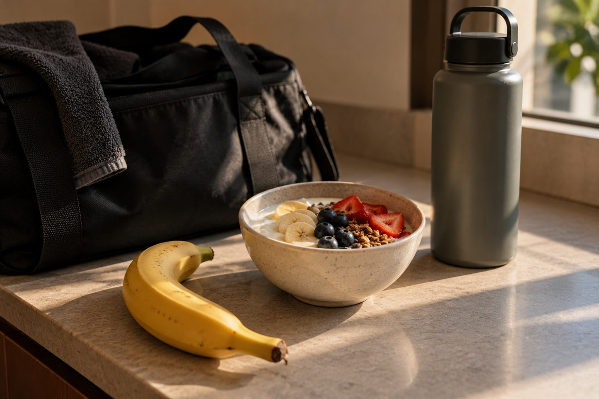
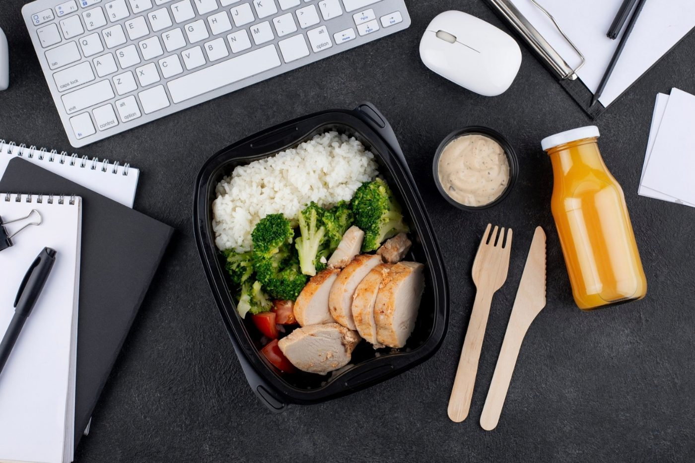
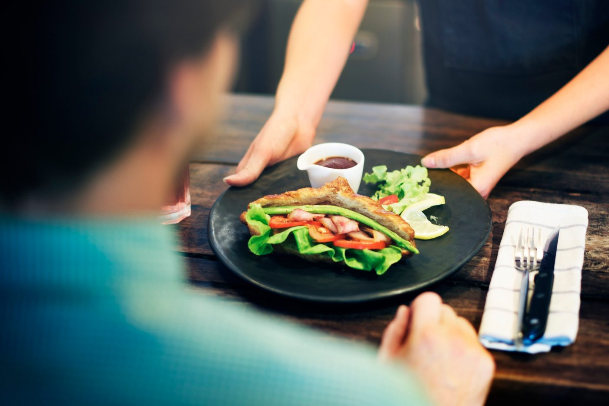

You don’t need six meals, perfect timing or a cupboard full of sports nutrition products. For most busy business owners, getting more from your training starts with a few simple decisions around when and what you eat.
You’ve blocked out a 6PM training session.
Great.
Then the day starts.
Breakfast is rushed.
A meeting runs through lunch.
At 4:30PM you realise you haven’t eaten properly for hours.
Now you’re wondering:
Should I eat before training?
Will eating now make me feel too full?
Do I need a protein shake afterwards?
Should I avoid carbohydrates because I’m trying to lose body fat?
Suddenly a 45-minute gym session has created an entire nutrition strategy you need to manage.
It doesn’t need to be that complicated.
For most business owners doing regular gym or strength sessions, the first priority isn’t perfect nutrient timing.
It’s getting the fundamentals right consistently.
Then you can make a few practical adjustments around your training.
Before worrying about what to eat immediately before or after training, zoom out.
Ask:
Am I eating reasonably well across the day?
Am I regularly including protein-rich foods?
Am I eating fruit and vegetables?
Am I including nutritious carbohydrate sources?
Am I drinking enough water?
Australian dietary guidance recommends eating a variety of nutritious foods across the five food groups and drinking water. Eat For Health
That’s your foundation.
Because a perfectly timed banana at 5:30PM isn’t going to fix an entire day of poor nutrition.
If you train after work, breakfast and lunch still matter.
If you train first thing in the morning, what you ate the previous evening may influence how you feel as well.
Think about the day first. Then optimise around the workout.
Instead of:
“What’s the perfect pre-workout meal?”
Ask:
“When did I last eat, and how do I normally feel when I train?”
That’s much more useful.
If you’ve recently eaten a normal meal and feel good, you may not need anything else.
If several hours have passed and you’re getting hungry, eating something before training may make sense.
A normal meal beforehand might include:
Chicken + rice + vegetables
Eggs + wholegrain toast + fruit
Greek yoghurt + oats + berries
Tuna + salad wrap + fruit
If you’re closer to your session and don’t want a full meal, something smaller may be more comfortable:
The exact choice depends on your appetite, the type of training you’re doing and what feels comfortable for you.
You want to arrive ready to train, not starving and not uncomfortably full.
This is common for business owners.
You might have:
5:30AM: wake up
6:00AM: gym
7:15AM: home
7:45AM: school drop-off
8:30AM: first meeting
Trying to add a full sit-down breakfast before training may make the entire routine harder.
If you feel comfortable training without eating beforehand, you don’t necessarily need to force down a large breakfast.
Have some water, train, then eat afterwards.
But if you consistently feel hungry, flat or uncomfortable training without food, try something small beforehand.
For example:
Banana
Piece of toast
Yoghurt
Small smoothie
Then have your normal breakfast afterwards.
There’s no prize for training hungry.
And there’s no rule saying you must eat before every workout.
Build the routine around what helps you train well and what you can actually maintain.

This is where fitness nutrition often becomes unnecessarily complicated.
You’ve probably heard some version of:
“You need protein immediately after training or you’ve missed your window.”
For most recreational lifters, that’s not a useful way to think about it.
Protein matters.
But so does what you’re eating across the entire day.
Research supports adequate protein intake alongside resistance training for gains in muscle mass and strength. A large meta-analysis of 49 studies involving 1,863 participants found that protein supplementation produced modest additional improvements in strength and fat-free mass during prolonged resistance training. British Journal of Sports Medicine
So after training, ask:
“When is my next proper meal?”
Training at lunchtime and eating lunch afterwards?
Great.
Training at 5:30PM and having dinner at 7PM?
Also straightforward.
If your next proper meal is several hours away, have something convenient to bridge the gap.
For example:
The goal isn’t winning the race to consume protein fastest.
It’s consistently getting adequate nutrition across your day.
If you’re resistance training and want to build or maintain muscle, protein deserves some attention.
But that doesn’t automatically mean weighing every gram of chicken you eat.
A simpler starting point is to make sure your main meals regularly contain a meaningful protein source.
For example:
BREAKFAST
Eggs, Greek yoghurt, cottage cheese, milk or another suitable option.
LUNCH
Chicken, tuna, fish, lean meat, tofu or legumes.
DINNER
Fish, chicken, lean meat, tofu, eggs or legumes.
WHEN CONVENIENT
Yoghurt, milk, cottage cheese or a protein shake.
Research supports the combination of resistance training and adequate protein for building muscle and strength. British Journal of Sports Medicine
And remember:
The training itself is doing a lot of the heavy lifting.
Protein supports the process. It doesn’t replace good training.

This is another common mistake.
You’ve decided you want to lose body fat.
So:
Rice disappears.
Bread disappears.
Potatoes disappear.
But carbohydrates aren’t automatically incompatible with fat loss.
Australia’s dietary guidance includes grain foods, preferably mostly wholegrain or higher-fibre options, as one of the five core food groups, alongside fruit and vegetables. Eat For Health
Practical carbohydrate sources might include:
How much you need will depend partly on your overall energy needs and activity.
Someone doing two 45-minute strength sessions per week has different demands from someone training for a marathon.
Don’t make your nutrition more restrictive than your goal requires.
Let’s say your training session is at 6PM.
Your day could look something like this:
Eggs + wholegrain toast + fruit
Chicken rice bowl + vegetables
Greek yoghurt + banana
Water during your regular gym session
Salmon + potatoes + vegetables
That’s it.
No six-meal bodybuilding plan.
No alarms telling you when to eat protein.
No Sunday spent weighing every container.
Just normal food arranged around your actual day.
This is where UHP’s approach becomes important.
Because your calendar won’t always cooperate.
A client calls at 4:45PM.
Your last meeting runs over.
You need to pick up the kids.
Suddenly your 6PM session moves to 7:30PM.
Your nutrition strategy shouldn’t collapse because the calendar changed.
Use a simple decision tree:
Follow your normal meals.
If you’re hungry, use your planned snack and eat dinner afterwards.
If you’ve eaten recently and feel comfortable, train. Don’t force another meal just because the clock says “pre-workout.”
Eat normally.
You don’t need to dramatically change your entire day’s nutrition because one gym session moved.
That’s flexibility.
Same principles.
You’re in Melbourne overnight for meetings and want to use the hotel gym.
You don’t need to search for the perfect sports-nutrition meal.
At breakfast:
Eggs + toast + fruit
or another balanced option.
Lunch:
Choose something with a protein source, vegetables or salad and whatever other foods suit your needs.
Before training:
If you’re hungry, grab yoghurt or fruit.
After training:
Have dinner.
And if dinner is with a client?
Enjoy dinner with the client.
You don’t need to order the smallest item on the menu because you trained that afternoon.
Your training and nutrition should support your life.
Your life shouldn’t have to revolve around your training and nutrition.

If you don’t want to remember anything else, remember four things:
Get the fundamentals right across the whole day.
Don’t consistently arrive at training starving or uncomfortably full.
Include protein-rich foods regularly, particularly if building or maintaining muscle is a goal.
Have one convenient option available when meetings, travel or family commitments change the schedule.
DAY → FUEL → PROTEIN → BACKUP
That’s enough for most busy business owners to start.
Don’t change your entire diet.
Look at your next training session and answer four questions:
When am I training?
When will I last eat beforehand?
Am I normally hungry or flat at that time?
When will I eat afterwards?
Then make one adjustment.
Maybe you add a banana before your early workout.
Maybe you move your afternoon yoghurt closer to your evening session.
Maybe you make sure dinner after training has a good protein source.
Maybe you realise you’re already doing everything you need to do.
Don’t add complexity unless it solves an actual problem.
For a busy business owner, training shouldn’t create another full-time nutrition project.
You don’t need perfect meal timing.
You don’t need six meals.
You don’t need to organise your working day around food.
Start with the fundamentals.
Eat reasonably well across the day.
Fuel your training when you need it.
Get adequate protein.
Have convenient options for when your calendar changes.
At The Ultimate Health Project, that’s how we approach nutrition and training: build the system around your business, family and schedule, not the other way around.
Because the best nutrition strategy isn’t the one that looks perfect on paper.
It’s the one you can still execute during your busiest week.
Want help building your nutrition and training around your actual schedule?
Insights only go so far. A personalised program, built around your life, is what actually moves the needle. Book a free consultation and find out what that looks like for you.